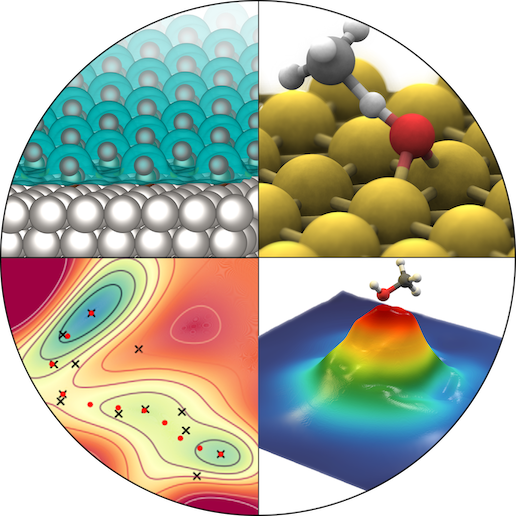

Texas Tech University
Our research centers on understanding and designing chemical reactions at interfaces using electronic structure methods, molecular simulation, and machine learning. We use density functional theory (DFT) and related computational techniques to uncover structure-property relationships that govern catalyst performance, selectivity, and stability. Ultimately, our goal is to leverage this understanding to design improved catalysts and electrochemical systems in-silico.
Progress in catalysis science increasingly demands that we embrace necessary complexity — moving beyond idealized models to capture the material, interfacial, mechanistic, and structural factors that govern real catalytic systems.

We use high-throughput DFT screening and machine learning to explore large spaces of candidate materials for reactions including CO2 reduction, nitrogen fixation, and the oxygen evolution reaction. Recent work has focused on activity-stability relationships in rutile oxides and designing materials for electrochemical ammonia synthesis.
We develop and apply methods to model the electrochemical interface, including implicit and explicit solvation, constant-potential DFT, and ab initio molecular dynamics. We study how the electric double layer, cation effects, and proton transfer influence selectivity in systems such as CO2 reduction on copper and water oxidation on iridium oxide.
We map out reaction pathways and compute activation barriers using methods that account for coupled proton-electron transfer and potential-dependent kinetics. By combining DFT with microkinetic modeling and machine learning, we identify rate-limiting steps in complex reaction networks for CO2 reduction, nitrogen fixation, and waste valorization.
Real catalysts exhibit roughness, grain boundaries, defects, and nanoscale disorder that idealized models miss. We investigate how nanostructuring influences activity and selectivity — for example, showing that oxide-derived copper electrodes exhibit roughness-enhanced selectivity to multi-carbon products during CO2 electroreduction.